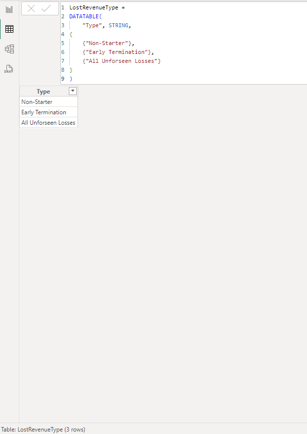
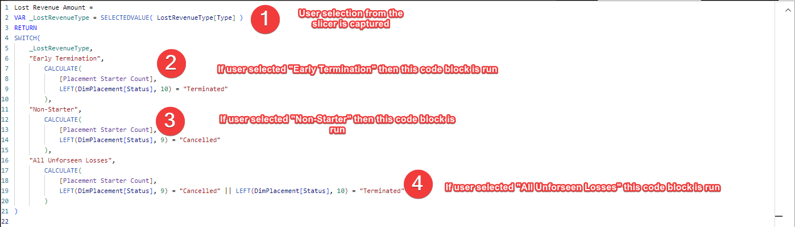
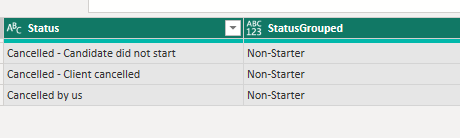
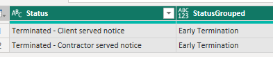
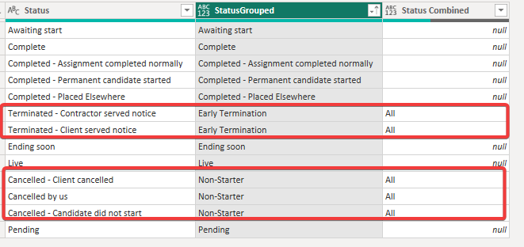
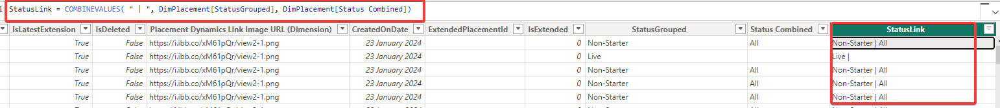
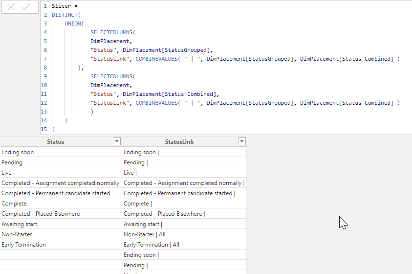
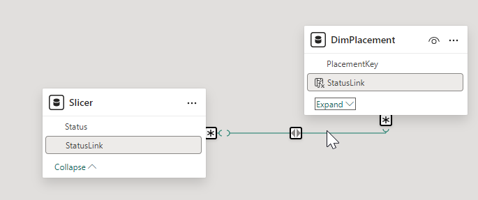

Context
The team did some previous development work where they needed to switch the view of the data between three different options. But one of the options was the aggregate of the first two options and it was concluded that Power BI slicers could not be used in this scenario. This belief stemmed from the assumption slicers can only represent mutually exclusive options.
However it has subsequently come to light that a method could work. So a spike was created to investigate the technical feasibility of this approach as, if successful, it could be valuable in several areas of the reporting suite.
Background
Button slicers in Power BI allow the user to filter the data into separate "bins" based on the distinct values in the underlying column used in the slicer.
So, for example, if we use a Country column, a button slicer will allow us to filter by UK, USA, Germany etc.
The investigation was to discover if this mechanism or something similar could allow the user to filter into overlapping buckets. So using our example, could we also have a button in the same slicer that allows us to view the data for Europe as a whole as well as UK, USA, Germany etc.?
Scope
Due to time constraints I only considered button slicers as the vehicle to do this. I would imagine there may also be other options available other than button slicers.
Suggested Approach
Method 1
a) Create a disconnected table
Create a calculated table with one column listing all of the options that you wish to see in the slicer.
This could be done in SQL, Power Query or DAX. Image shows it being done in DAX:

b) Use this column as the basis for the slicer
c) Replace measures in the visual
In the visual(s) you wish to be influenced by this slicer, you remove the existing measure and replace it with a new measure.
This new measure captures the user selection and carries out a different calculation dependent on the selection made:

Method 2
a) Create 3 calculated columns in the source table
So in the example we are using Status from the dimension table so we would instead create additional columns in this dimension table.
The first calculated column would group the non-overlapping elements (the child elements) we want in the slicer.
We would then create a second calculated column which would group the child elements and become further option(s) in the slicer (the parent element(s)).
Finally we create a third column which is the concatenation of these two columns. This work can be done in SQL, Power Query or DAX.
Using the Lost Revenue example
Calculated Column 1 "rolls up" all the different cancelled statuses into one status called Non-Starter:

and the different terminated statuses into one status called Early Terminations:

Calculated Column 2 called Status Combined then adds the overlapping / parent bucket. In this example, Non-Starter and Early Terminations fall into All. Anything else is ignored:

Calculated Column 3 is the concatenation of these two columns and will serve as the key column when we create the slicer table and the relationship back to this table:

b) Create a separate slicer table
The slicer table is made up of 2 columns. The first column contains all the possible values of both the StatusGrouped and Status Combined columns. It also has a second column which is the StatusLink column:

c) Create a relationship between the StatusLink column in the slicer table and StatusLink in the dimension table (many to many).

(This approach introduces a many-many relationship which should be tested carefully for performance and filter propagation behaviour in larger models.)
d) And use the Status field in the button slicer
Final Thoughts
Method 1 is the more straightforward way of doing it. However it is more manual. The rows for the disconnected table need to be hardcoded and then in the Lost Revenue Amount measure either new measures need to be brought in (if they already exist in the model) or created (if they don't). (Remember that each user selection carries out a different calculation which may or may not already exist in the model).
You also need to replace the measure in each visual with this new Lost Revenue Amount which, depending on the number of visuals/ cards etc which need this slicer may not be a trivial amount of work.
Method 2 is manual too in terms of deciding the grouping for the statuses (or whatever the underlying field is to be). In contrast to method 1, it uses the original measures so no visuals need to be altered. It also has a big advantage that once it is decided how StatusGrouped and Status Combined are to be populated, the rest of the work (the Slicer Link column, the Slicer table, the relationship between Slicer and dimPlacement, the slicer in the UI and the visual) will all automatically update.
In summary, if this a one and done situation, method 1 would be the best approach. Yes it's manual and there is a fair amount of work to do in terms of creating the correct calculations based on user selection and then replacing the measures in the visuals that want to be affected by the slicer. But, assuming nothing needs to change going forward, it's perfectly achievable.
Method 2, although more complex to set up, offers a bit more robustness should the groupings need to be altered e.g. more subgroupings or slightly different groupings and/or the number of visuals and calculations is large.
One thing to note is that calculated columns and tables are generated after the data has been imported / refreshed and so increasing the number of these calculations will increase the load / refresh times. Another reason to move these calculations to SQL.
What Happened Next?
Nothing. The solution was never implemented. The team continued to operate under the belief that overlapping buckets aren't possible in Power BI slicers.
The spike was completed and the options clearly documented. The pattern was proven but without a champion to carry it forward, it remained an interesting idea in the archive.
Sometimes the hardest problem isn't technical. It's organisational.